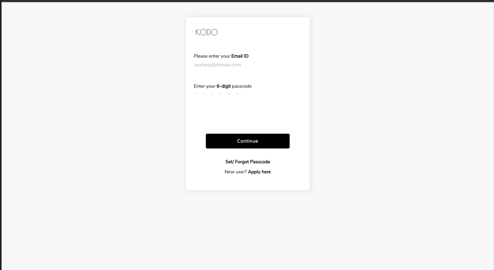

Identifying the Problem
The login was purely functional — outdated branding, no imagery, no sense of product. And the auth itself was behind the curve: password-only entry with no modern alternatives, adding friction for teams logging in multiple times a day.
What We Made
A modernised login with the updated brand — refreshed logo, current typography, and contextual imagery that gives the screen a sense of product before you even sign in. On the auth side we added passkey support and SSO login, so returning users get in with one tap instead of typing credentials every time.

Outcome
A small project with outsized visibility — it's the first screen everyone sees. Passkey and SSO adoption picked up steadily among returning users, and the refreshed entry point aligned the product's first impression with the rebrand that followed across the platform.